전자상거래운용사 (2015-09-06 기출문제)
1과목: 인터넷 일반
1. 다음 중 사용자 입력을 받기 위한 폼 작성에서 입력 양식 지정에 사용하는 <<INPUT> 태그의 속성에 해당되지 않는 것은?
- METHOD
- VALUE
- NAME
- TYPE
(정답률: 49%)

2. 다음 중 HTML의 <body> 태그 속성 중에서 한번 이상 방문했던 링크의 문자열 색을 지정할 때 사용되는 속성으로 가장 올바른 것은?
- alink
- bgcolor
- link
- vlink
(정답률: 48%)
3. 다음 중 업데이트가 빈번하게 일어나는 웹사이트 정보를 사용자에게 쉽게 제공하기 위해 만들어진 XML 기반의 콘텐츠 배급 포맷은?
- DOC
- RSS
- RDF
- HTML
(정답률: 50%)
4. 다음 중 HTML의 <HEAD> 영역 안에 지정되어야 하는 태그가 아닌 것은?
- <LINK>
- <TITLE>
- <BGCOLOR>
- <META>
(정답률: 48%)
5. 다음 중 HTML로 폼(FORM)을 작성할 때 2줄 이상의 텍스트를 입력하기 위해 사용되는 태그는?
- <MULTILINE>
- <TEXTBOX>
- <TEXTAREA>
- <MLINEBOX>
(정답률: 52%)
6. 다음 중 Flash 프로그램으로 만드는 동적인 웹페이지를 제작할 수 있는 애니메이션 파일의 확장자는?
- GIF
- SWF
- JPEG
(정답률: 51%)
7. 다음 중 디지털 이미지, 오디오, 비디오 등의 저작권 정보를 식별할 수 있도록 특정한 부호를 표시하는 방법을 무엇이라 하는가?
- 디지털 인증서(Digital Certificate)
- 디지털 워터마크(Digital Watermark)
- 디지털 서명(Digital Signature)
- 해커(Hacker)
(정답률: 63%)
8. 다음 중 인터넷 검색엔진의 유형이 아닌 것은?
- 메타형 검색방식
- 키워드 검색방식
- 디렉토리(주제별) 검색방식
- 로봇 검색방식
(정답률: 59%)
9. 다음 중 전자우편에서 쓰이는 용어와 가장 거리가 먼 것은?
- HTTP
- POP
- SMTP
- MIME
(정답률: 55%)
10. 다음 중 이메일을 담당하는 메일 송신서버와 수신서버의 프로토콜이 올바르게 짝지어진 것은?
- SMTP-POP
- SNMP-POP
- POP-SNMP
- POP-SMTP
(정답률: 61%)
11. 다음 중 HTML의 테이블 태그에 대한 설명으로 가장 올바르지 않은 것은?
- <TR> : <TABLE> 태그 내에서 사용하며 행을 바꿀 때 사용한다.
- <TH> : <TABLE> 태그 내에서 표의 셀 제목을 지정할 때 사용한다.
- <TD> : <TABLE> 태그 안에서 지정하며 표 내부의 각각의 셀을 작성할 때 사용한다.
- <CAPTION> : <TABLE> 태그 내에서 표의 여백을 지정할 때 사용한다.
(정답률: 41%)
12. 다음 중 하이퍼텍스트에 대한 설명으로 가장 올바르지 않은 것은?
- 외부의 응용프로그램과 웹서버를 연결시키는 표준이다.
- 하이퍼텍스트 언어에는 SGML, XML, HTML 등이 있다.
- 하이퍼텍스트 문서를 읽는 프로그램을 브라우저라고 한다.
- 하이퍼텍스트에는 다른 정보에 대한 링크 기능이 있어 더 자세한 정보를 선택할 수 있다.
(정답률: 33%)
13. 다음 중 네티즌이 지켜야 할 기본 정신에 대한 설명으로 가장 올바르지 않은 것은?
- 사이버 공간은 누구에게나 평등하며 열린 공간이다.
- 사이버 공간의 주체는 인간이다.
- 사이버 공간은 공동체의 공간이다.
- 사이버 공간은 네티즌 간에 서로 감시하는 열린 공간이다.
(정답률: 66%)
14. 다음 중 인터넷에서 주소로 사용할 수 없는 것은?
- URL
- IP 주소
- Domain 네임
- 컴퓨터 이름
(정답률: 62%)
15. 다음 중 <INPUT> 태그의 Type 속성의 종류에 해당하지 않는 것은?
- hidden
- button
- select
- radio
(정답률: 48%)
16. 다음 중 도메인 네임(Domain Name)에 대한 설명으로 가장 올바르지 않은 것은?
- 도메인 네임은 서버의 이름 – 기관명 - 기관의 성격 – 국가명으로 구성된다.
- 도메인 네임은 최상위 도메인이 가장 왼쪽에 위치하는 내림차순으로 나타낸다.
- 국가 도메인은 각 국가의 망관리 센터에서 운영하며 차상위 도메인은 국가의 상황에 맞추어 이용할 수 있다.
- 최상위 도메인은 7개의 일반 도메인과 국가 도메인으로 나뉜다.
(정답률: 48%)
17. 다음 중 IP 주소(Address)에 대한 설명으로 가장 적합하지 않은 것은?
- IP 주소는 인터넷에 연결된 기기를 식별하는 유일한 번호이다.
- 각각의 컴퓨터는 하나의 IP 주소를 가지며 컴퓨터들은 IP 주소를 이용하여 인터넷에 접속한다.
- IP 주소의 각 단위를 옥텟(octet)이라 부르며, 각 단위는 1에서 128까지 128개로 표현된다.
- IP 주소는 네 자리로 구분된다.
(정답률: 47%)
18. 다음 중 정보검색의 구성요소들에 대한 설명으로 가장 올바르지 않은 것은?
- 형식화 – 사용자가 검색 요청한 자연어를 분석하여 검색모듈의 특성에 부합하는 질의로 변환하는 것을 말한다.
- 검색 – 질의와 문서 사이의 유사도를 수치화한 후 우선순위를 부여하여 결과를 제공하는 것을 말한다.
- 검색효과 평가 – 유사도를 계산하는 질의 보완·수정 작업을 말한다.
- 색인 – 자동색인기법을 통한 문서와 질의의 색인화 작업을 말한다.
(정답률: 50%)
19. 다음 중 인터넷 상에서만 유포되는 사이버 언어의 장점이 아닌 것은?
- 짧은 문장 내에 많은 의미를 전달하는 효과가 있다.
- 국어의 어휘량을 늘리고 표준화하는 효과가 있다.
- 네티즌들끼리 공감대를 형성하는 효과가 있다.
- 기존 언어에서 불가능했던 다양한 감정 표현을 가능하게 하는 효과가 있다.
(정답률: 58%)
20. 다음 중 자바스크립트의 실행결과로 가장 올바른 것은?
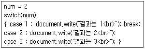
- 결과는 1
- 결과는 2
- 결과는 2
결과는 3 - 결과는 1
결과는 2
결과는 3
(정답률: 49%)
2과목: 전자상거래 일반
21. 다음 중 자바스크립트로 문자열을 출력하는 방식으로 올바른 것은?
- <script language="JavaScript">Response.write(“전자상거래 운용사”);</script>
- <script language="JavaScript">printf(“전자상거래운용사”);</script>
- <script language="JavaScript">System.out.print(“전자상거래 운용사”);</script>
- <script language="JavaScript">document.write(“전자상거래 운용사”);</script>
(정답률: 29%)
22. 다음 중 웹페이지 개발 단계의 순서로 가장 올바른 것은?
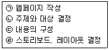
- (ㄷ) → (ㄹ) → (ㄴ) → (ㄱ)
- (ㄴ) → (ㄷ) → (ㄹ) → (ㄱ)
- (ㄹ) → (ㄷ) → (ㄴ) → (ㄱ)
- (ㄷ) → (ㄴ) → (ㄹ) → (ㄱ)
(정답률: 57%)
23. 다음 중 번호 없는 목록(UL) 태그에서 Type 속성의 값으로 사용할 수 없는 것은?
- SQUARE
- CIRCLE
- RECTANGLE
- DISC
(정답률: 40%)
24. 다음 중 디렉토리형 검색 엔진의 특징으로 가장 거리가 먼 것은?
- 사람이 직접 웹페이지의 정보들을 분류하여 정보를 제공한다.
- 로봇 에이전트형 검색엔진에 비하여 상대적으로 데이터베이스의 양이 많다.
- 카테고리에 의한 체계적인 링크 정보를 제공한다.
- 사람의 판단에 의하여 분류하므로 고급 정보를 제공한다.
(정답률: 43%)
25. 다음 중 테이블 내의 셀 경계선과 셀 내용 사이의 간격을 지정하기 위한 속성으로 가장 올바른 것은?
- borderwidth
- cellpadding
- cellspacing
- cellwidth
(정답률: 27%)
26. 다음 중 자바스크립트에 대한 설명으로 가장 올바르지 않은 것은?
- 자바스크립트는 HTML과 사용자 사이의 상호작용이나 피드백을 받을 수 있으며, 멀티미디어와 애니메이션을 웹 상에 표현이 가능하다.
- 자바스크립트는 컴파일 과정을 거치지 않고 브라우저에서 직접 실행되므로 자바스크립트를 지원하는 웹브라우저만 있으면 서로 다른 플랫폼에서도 실행이 가능하다.
- 자바스크립트는 자바를 기반으로 한 객체지향 스크립트언어로서 스크립트 코드가 HTML 문서사이에 직접 삽입되는 특징을 가지고 있다.
- 자바스크립트는 모태를 자바에 두고 있기 때문에 동일한 언어이지만, 기본적인 문법 구조는 다르다.
(정답률: 35%)
27. 다음 중 인터넷 실명제에 관한 설명으로 가장 올바르지 않은 것은?
- 인터넷상의 의사소통 과정에서 나타나는 역기능을 제거하거나 사전에 예방하여 사이버 공간을 순화하기 위하여 도입되었다.
- 사이버 공간에서 인터넷 실명제가 전면적으로 실시되기 이전까지는 활동 주체의 익명성 인정 여부를 각 사이트의 임의적 자율에 맡긴다.
- 본인 여부 확인을 위해 신용정보기관이 갖추고 있는 실명 인증 데이터베이스 또는 주민등록 전산자료를 바탕으로 신분이 확인된 사람만 온라인 게시판에 의견이나 정보를 올릴 수 있도록 하는 제도이다.
- 개인정보 침해 방지 대안으로 개별 웹사이트는 실제 주민등록번호와 전혀 다른 I-PIN(Internet-Personal Identification Number) 정보만을 갖게 되므로 주민등록번호 수집 행위 등 개인정보 침해요소를 줄일 수 있다.
(정답률: 35%)
28. 다음 중 웹 디자인 시 고려해야 할 기본사항으로 가장 올바르지 않은 것은?
- 이미지 맵(image map) 기법을 사용하여 웹사이트 전체를 둘러 볼 수 있는 메뉴를 만든다.
- 문단 정렬을 할 경우 전체 웹사이트에 있는 웹페이지들이 일관된 문단 정렬방식을 갖도록 한다.
- 화면의 계층 구조는 가능한 좁고 깊게 구성해야 한다.
- 전송속도를 고려하여 적절한 텍스트와 이미지의 크기를 사용해야 한다.
(정답률: 59%)
29. 다음 중 이메일에 대한 설명으로 올바르지 않은 것은?
- 메일에 원하는 텍스트, 음성, 이미지 파일 등을 첨부해서 보낼 수 있다.
- 메일을 받는 수신자의 주소를 정확히 명시했는데 메일의 내용을 쓰지 않고 보냈을 경우에는 수신자에게 전달되지 않고 되돌아온다.
- 메일을 받는 수신자를 한 사람이 아닌, 여러 사람으로 지정할 수 있다.
- 받은 메일의 내용을 다른 여러 사람이 볼 수 있도록 이 내용을 그대로 전달할 수 있다.
(정답률: 52%)
30. 다음 중 HTML의 입력 양식(form)에 대한 설명으로 가장 거리가 먼 것은?
- 입력 양식을 만들기 위해서는 <FORM>...</FORM> 태그를 사용한다.
- 웹 서버로 전송할 데이터를 입력받을 때 사용하는 것이다.
- 웹 서버로 데이터를 전송하는 방식에는 POST와 GET이 있다.
- 입력 양식을 만들기 위해서는 별도의 특별한 언어를 사용해야 한다.
(정답률: 46%)
31. 다음 중 구매 후 일어나는 온라인 효과 측정 내용으로 가장 올바른 것은?
- 재구매 빈도
- 사이트 방문
- 방문객 수
- 구매 수
(정답률: 39%)
32. 다음 중 WWW에서 사용자들이 인터넷에 접속할 때, 기본적으로 거쳐 가도록 만들어진 사이트는 무엇인가?
- 포털사이트
- 전자상거래사이트
- SNS
- 블로그
(정답률: 54%)
33. 다음 글상자의 괄호 안에 알맞은 용어는?
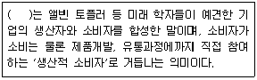
- 프로슈머
- 로지슈머
- 디슈머
- 블랙컨슈머
(정답률: 50%)
34. 다음 중 전략적으로 고객을 세분화하기 위해 필요한 고객정보의 특성이 다른 것은?
- 고객의 기대
- 고객의 성별
- 고객의 생일
- 고객의 연령
(정답률: 47%)
35. 다음 중 전통적 마케팅에 비해 e-마케팅이 가지는 차이점으로 가장 거리가 먼 것은?
- e-마케팅은 일대일 마케팅을 운영할 수 있다.
- e-마케팅은 지역적 한계성을 뛰어넘을 수 있다.
- e-마케팅의 유통채널은 직접경로 위주이다.
- e-마케팅 채널은 일방향적이다.
(정답률: 48%)
36. 재산세 납부 메일을 받아서 바로 확인하고 마우스로 결제를 클릭하여 재산세를 간단하게 납부하였다. 이와 같은 방식의 전자지불수단을 지칭하는 용어로 가장 올바른 것은?
- 전자어음
- 전자수표
- 전자상품권
- 전자고지 및 결제(EBPP : Electronic Bill Presentment and Payment)
(정답률: 56%)
37. 다음 중 전자상거래의 안전성을 높이기 위한 제도로 거래 대금을 제3자에게 맡긴 뒤 물품 배송을 확인하고 판매자에게 지불하는 제도는?
- 에스크로
- 첵프리
- e-체크
- 몬덱스
(정답률: 49%)
38. 다음 중 전자적인 매체를 통해 지급, 결제, 가치 이전 등 현금 본연의 기능을 수행하는 전자지불수단은?
- 전자화폐
- 전자상품권
- 상품권 결제
- 전자어음
(정답률: 56%)
39. 물류관리의 고객 서비스 구성요소 중에서 거래 후 요소에 해당하는 것으로 가장 적절한 것은?
- 명문화된 고객서비스 정책
- 배달에 소요되는 주문사이클 시간
- 고객 불만 사항 및 클레임 처리
- 주문 충족 이행률 및 주문의 정확도
(정답률: 49%)
40. 다음 중 제3자 물류에 대한 설명으로 가장 올바른 것은?
- 외부 물류업체에게 물류업무를 아웃소싱해서 물류업무를 추진하는 형태
- 사내 물류조직을 별도로 분리하여 자회사로 독립하여 물류업무를 추진하는 형태
- 사내 물류조직을 두고, 물류업무를 수행하는 형태
- 사내 물류조직을 두고, 관련 기업에 물류업무를 맡아하는 형태
(정답률: 43%)
3과목: 컴퓨터 및 통신 일반
41. 다음 글상자에서 설명하는 물류의 구성요소로 가장 올바른 것은?
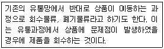
- 하역
- 포장
- 부품 및 서비스 지원
- 역물류
(정답률: 52%)
42. 다음 글상자에서 설명하고 있는 유형은?
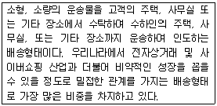
- 택배
- 자체배송
- 오프라인 제휴
- 우편
(정답률: 55%)
43. 다음 글상자에서 설명하는 용어로 가장 올바른 것은?
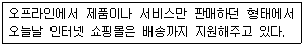
- 프로세스 변형
- 프로세스 확장
- 프로세스 축소
- 프로세스 관리
(정답률: 59%)
44. 다음 글상자에서 설명하고 있는 e-비즈니스 모델은 무엇인가?
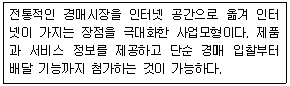
- 전자상점
- 전자경매
- 전자쇼핑몰
- 협업플랫폼
(정답률: 51%)
45. 다음 글상자에서 설명하고 있는 용어로 가장 올바른 것은?
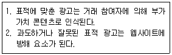
- 광고수수료
- 거래수수료
- 정기사용료
- 허가수수료
(정답률: 55%)
46. 다음 글상자에서 설명하고 있는 e-비즈니스 형태는?
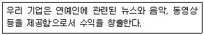
- 콘텐츠 제공형
- 정보 중개형
- 포탈
- 거래 중개형
(정답률: 60%)
47. 다음 글상자에서 설명하고 있는 전자상거래 유형은?
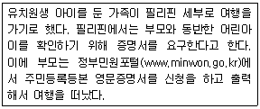
- B2C
- G2C
- B2B
- C2C
(정답률: 56%)
48. 다음 중 전자상거래가 기존 시장에 비해서 가지는 장점과 가장 거리가 먼 것은?
- 상품 구매 시 시간적 공간적 제약을 받지 않는다.
- 상품 구매 의사결정 과정에서 상품에 대한 가격정보는 물론 유사상품에 대한 정보까지 쉽게 확보할 수 있어 비교적 좋은 구매결정을 내릴 수 있다.
- 쌍방향 커뮤니케이션을 이용하여 소비자는 자신의 욕구를 전달할 수 있다.
- 네트워크를 이용하여 거래가 이루어지기 때문에 상대적으로 고정비용과 간접비용이 더 많이 든다.
(정답률: 56%)
49. 다음 글상자에서 설명하는 용어로 가장 올바른 것은?
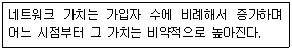
- 무어의 법칙
- 메트카프의 법칙
- 수확체감의 법칙
- 수확체증의 법칙
(정답률: 42%)
50. 다음 중 초기 인터넷이 등장한 이후 성공적으로 자리 매김을 할 수 있었던 배경에 대한 설명으로 가장 거리가 먼 것은?
- 통신표준체계 TCP/IP
- 쉽게 인터넷 서비스를 사용할 수 있게 지원한 WWW
- Big data 기술로 자료 수집
- 저비용으로 정보획득이 가능
(정답률: 42%)
51. 특정 서비스에 다수의 서버가 배정되어 있을 경우 이들 사이의 부하 균형(load balancing)을 지원할 수 있는 네트워크 장비는?
- 리피터
- L4 스위치
- 브리지
- 라우터
(정답률: 33%)
52. 다음 중 3G 무선통신 방식과 비교한 4G 무선통신 방식에 대한 설명으로 가장 올바르지 않은 것은?
- WiFi는 4G 무선통신 방식에 해당한다.
- 전송속도가 훨씬 빨라졌다.
- 사용 주파수 대역이 세계 공통으로 정해져서 글로벌로밍이 가능해졌다.
- 주파수 사용 효율이 높아졌다.
(정답률: 45%)
53. 다음 중 XML 표준을 엄격히 준수하는 HTML 버전으로 올바른 것은?
- SGML (Standard Generalized Markup Language)
- CSS (Cascading Style Sheets)
- DHTML (Dynamic HTML)
- XHTML (eXtensible Hypertext Markup Language)
(정답률: 50%)
54. 다음 중 국내 인터넷주소 자원을 관리하고 도메인 이름의 등록 및 최상위 루트 DNS의 관리 운영을 담당하는 국내기관은?
- 한국정보통신산업기술진흥원
- 한국정보화진흥원
- 한국인터넷정보센터
- 한국통신
(정답률: 35%)
55. 다음 중 컴퓨터 바이러스에 대한 적절한 대응 조치와 가장 거리가 먼 것은?
- 안티바이러스 소프트웨어를 설치한다.
- 로그인 패스워드를 매일 변경한다.
- 운영체제나 주요 소프트웨어 보안 업데이트를 주기적으로 한다.
- 안티바이러스 소프트웨어를 주기적으로 업데이트한다.
(정답률: 49%)
56. 다음 중 리눅스(Linux) 운영체제에 관한 설명으로 가장 올바르지 않은 것은?
- 웹 응용 서비스들의 액티브X 의존도가 심해 보안 문제를 일으키기 쉽다.
- 공개소스 개발 방식으로 개발되었으며, 소스코드가 무료로 제공된다.
- 우분투, 레드햇, 데비안, 페도라 등 다양한 배포판들이 존재하며, 배포판에 따라 기본적으로 포함되는 소프트웨어들이 달라진다.
- 대형컴퓨터나 소형컴퓨터 모두에서 사용할 수 있다.
(정답률: 41%)
57. 다음 중 서버가 제공하는 서비스가 아닌 것은?
- 메일
- 파일시스템
- 데이터베이스
- 운영체제
(정답률: 47%)
58. 다음 중 ROM에 저장되어 있다가 컴퓨터 전원이 켜지면 실행되어 운영체제를 주기억장치로 로드하는 역할을 수행하는 프로그램을 가리키는 용어는?
- BIOS
- 장치관리자
- 부트스트랩
- 인터럽트
(정답률: 33%)
59. 다음 중 데이터를 저장하는 단위를 크기 순서대로 나열한 것은?
- 바이트 - 워드 – 비트
- 비트 - 바이트 - 워드
- 바이트 - 비트 – 워드
- 비트 - 워드 - 바이트
(정답률: 51%)
60. 다음 중 악성 코드의 유형으로 올바른 것은?
- 트로이목마(Trojan Horse)
- APT(Advanced Persistent Threat)
- 디도스(DDoS)
- 피싱(Phishing)
(정답률: 49%)
설명: <INPUT> 태그의 속성으로는 VALUE, NAME, TYPE 등이 있지만 METHOD은 <FORM> 태그에서 사용되는 속성이다. METHOD는 폼 데이터를 서버로 전송할 때 사용되는 HTTP 메소드를 지정하는 속성이다.